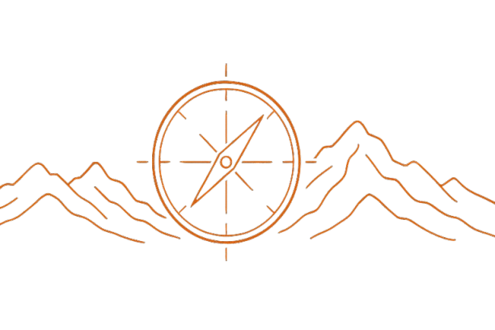

Žádný plán = plán na selhání
Svoboda bez směru je chaos. Plán je mapa, ne vězení.

Chlapi si často pletou svobodu s bezbřehostí. „Dělám si, co chci, kdy chci, a nikdo mi do toho nekecá.“ Jenže svoboda bez směru je jako otevřený oceán bez kompasu. Můžeš plout kamkoli, a přesto strávíš celé dny na místě, protože tě unáší proud. Skutečná svoboda nezačíná tím, že nad vším mávneš rukou. Začíná tím, že víš, kým chceš být, a podle toho si řídíš čas, energii a pozornost. To je rozdíl mezi životem, ve kterém reaguješ, a životem, který tvoříš.
Vyslovit uhle myšlenku bolí, ale je to pravda: Žádný plán = plán na selhání. Když nemáš směr, vezme si tě okolí. Jeho hluk, požadavky, notifikace, cizí nálady. Navenek se nezastavíš, vnitřně nestoupáš. Den skončí a ty máš pocit, že jsi pořád na startu. To není svoboda. To je bezmoc.
Plán jako mapa: proč je důležitý, i když nesnášíš tabulky
Plán není mřížka po minutách ani excelovská kravina, která tě pálí v očích. Plán je mapa. Ukazuje směr a drží tě ve tvém rámci, ve kterém se nerozsypeš. Bez mapy ráno vstaneš a první, co uděláš - sáhneš po telefonu. A než se naděješ, je po snídani, po soustředění a po energii. Plán tě chrání před drobnými úniky, které tě každý den o milimetr vzdálí od toho, co je doopravdy důležité.
S plánem se rozhoduješ podle hodnot, ne podle lenosti. Neřešíš, jestli „se ti chce“. Děláš to, co sis v klidu určil jako správné. Tady se rodí respekt k sobě – ne z motivačních citátů, ale z dodržených slibů. A taky šetříš mentální energii. Každé „co teď?“ ti ubírá energii. Když víš, co je dnes podstatné tak tvá hlava není záchytná síť pro náhody. Prokrastinace ztrácí půdu pod nohama, protože už to není mlha, ale kurz.
Najdi směr: hodnoty, vize, cíle, které dávají smysl
Žádný plán nefunguje, když není tvůj. Ne to, co frčí na reels a v instagramových příspěvcích. Musí být Tvůj. Sedni si na dvacet minut do ticha a napiš si tři až pět hodnot, kterými chceš žít: zdraví, rodina, poctivost v práci, síla, klid. Tohle je kompas. Když na tebe přijde jakýkoli požadavek, konflikt nebo pokušení, opřeš se o tenhle papír hodnot a rozhodneš se podle něj, ne podle momentálního cuknutí a nálady.
Pak si nakresli vizi. Ne mlhu „chci být šťastný“, ale konkrétní obraz. Bude to třeba tento časový rámec - roční vize: „Uběhnu 5 km bez zastavení, budu mít 100 000 Kč rezervu, zvládnu 10 shybů v kuse, budu spát 7,5 hodiny v průměru.“ Vize na pět let: „Práce s větší mírou autonomie, víkend bez notebooku, každé léto týden v horách pěšky.“ Vize tě táhne dopředu, když máš den blbec. Dává motivaci jménem "proč".
Teď si dejMALÉ cíle. Žádné nesmyslně přemrštěné blbosti. „Do prosince ujdu 5 km pod 30 minut.“ „Každé pondělí, středu a pátek budu pracovat soustředěně 60–90 minut bez vyrušení čímkoli.“ „Denně od 19:00 bude telefon mimo ložnici a ztišený.“ Cíle musejí být tvé, uskutečnitelné a termínované. A potom přidej týdenní kroky. Velký cíl tě zmrazí, malý krok tě rozhýbe.
Cíl: jak přetavit cíle do reality
Dej týdnu rytmus. Třeba: Po-St-Pá - běh, Út-Čt - silový trénink, So - dlouhá chůze, Ne - odpočinek a plánování. V práci makej soustředěně a pečlivě na důležitých úkolech a zpracovávej je postupně. Všechno ostatní si seřaď podle priorit. Místo nekonečných To-Do listů si napiš tři klíčové úkoly dne. Když to uděláš, dáš dni a sobě směr a jedeš podle toho. Zbytek je bonus.
Ráno drž startovní rituál: vstávej hned na první zazvonění budíku, dej si studenou sprchu, 10–15 minut pohybu, krátký zápis do deníku (tři věty: za co jsem vděčný - co dnes udělám jako první - co zítra zlepším). Až potom vem do ruky telefon. Tímhle si chráníš hlavu před tím, aby ti den ukradl někdo jiný.
Večer krátká rekapitulace: co jsem splnil - kde jsem uhnul - co zítra změním. Ne omluvy a výmluvy, ale fakta. Pět minut stačí. Dáš tak každému dni tečku, která drží příběh pohromadě.
Disciplína: ne vězení, ale nejvyšší forma svobody
Disciplína není o tom, že se budeš trestat. Je to svobodná volba dělat správné věci i tehdy, když se ti nechce. Zní to tvrdě, ale je v tom úleva: nemusíš pokaždé vyjednávat s vlastní leností. Prostě víš, co děláš, a uděláš to. A každé dodržené slovo tě posune ve tvém růstu na vyšší příčku.
Začni malými návyky. Vstaneš hned, když zazvoní budík. Uklidíš hrnek hned, když ho umyješ. Dáš 15 kliků. Připravíš si boty na běh ke dveřím. Vypadá to směšně, ale právě drobnosti dělají rozdíl mezi „chtěl bych“ a „dělám“. Pomůže pravidlo dvou minut: co trvá méně než dvě minuty, udělej hned. Každá taková věc tě posune k tomu, abys na sobě začal makat.
Počítej se selháním. Přijde. Proto zaved’ pravidlo „jeden zkažený den“. Když se nepovede trénink, když ujedeš v jídle nebo tě sežere práce – další den se vracíš do rytmu. Nečekáš na pondělí ani na „až bude klid“. Zlomí tě jen to, když to vzdáš, ne to, že jsi jednou uklouzl.
A drž své proč na očích. Ne „chci břišáky“, ale „chci mít energii, abych žil v přítomnosti“. Ne „chci víc peněz“, ale „chci si užívat svůj čas podle svých představ“. Ne „chci běhat“, ale „chci se cítit ve vlastním těle jako doma“. Smysl je motor, disciplína je volant.
Svoboda vs. rigidita: jak zůstat pružný a přesto konzistentní
Plán není diktátor. Je to průvodce. Konzistence je důležitější než dokonalost. Když tě bolí koleno, dej si chůzi. Když máš moc práce, rozděl si ji na pracovní bloky podle priority a důležitosti. Když jsi nemocný, uspořádej si svůj týden jinak. Důležité je, že držíš nit a postupuješ. Perfekcionismus je past – přehodíš jeden den a řekneš si „tak nic“. Ne. Jen další krok.
Odpočinek je součást plánu. Ne výjimka. Spánek, ticho, koníčky, čas bez „užitku“. Kdo dlouhodobě tlačí na výkon bez pauzy, vyhoří. A vyhořelý chlap je nespolehlivý, podrážděný a prázdný. Odpočinek není slabost – je to strategie, jak vydržet.
Jednou za měsíc si dej revizi. Co funguje, co drhne, co už není tvůj cíl a v oblasti tvého zájmu. Přepiš to. Vyměň cíl, když zjistíš, že to není ono. Přidej odpočinek, když tě všechno bolí. Život se mění a plán s ním. Podstatné je, aby ses pořád cítil u volantu.
Praktický rám, který spustíš hned (bez kouzel)
Neděle večer – 20 minut: napiš tři pracovní priority týdne a tři osobní priority. Zapiš tréninkové dny. Naplánuj jeden delší pohyb venku. Naplánuj si jednnu věc, kterou uděláš pro někoho jiného (oprav něco, zavolej tomu, komu už déle chceš zavolat, pomoz někomu s nějakou činností). To tě drží nohama na zemi.
Každé ráno – 10–15 minut: studená sprcha, krátký pohyb a rozhýbání těla, zápis do deníku ve třech větách. Telefon vezmi do ruky až potom. Tím se chráníš před cizím diktátem dne.
Každý den – 1–2 bloky: soustředěná práce 60–90 minut bez vyrušení. Notifikace ztlumené, okna zavřená. Odměna až po splnění práce. Zbytek dne řeš operativně. Večer pět minut rekapitulace.
Každý týden – 1× dlouhý krok: vydej se ven. Dej si chůzi, běh na kopec nebo v lese. Vyvětráš si hlavu a hlava srovná tvůj směr. V jednoduchosti je síla.
Když to začne klouzat a padat: měj připravenou záchrannou cihlu – dvou až pětiminutový úkol, který tě vrátí do hry (20 dřepů, 10 kliků, umýj dřez, napiš první odstavec knihy, pošli e-mail). Nečekej, až přejde chuť zahodit ten tvůj den. Přeruš tu chuť to udělat pohybem.
Nejčastější pasti: pozor na tři „tikající“ miny
Příliš ambiciózní start. „Od zítřka totální režim.“ Vydržíš dva dny a spadneš. Začni menším tempem, které udržíš. Rychlost přijde s tím, jak si na toto budeš zvykat.
Plán bez času. Cíle, které nemáš v kalendáři zůstanou pouze přáními. Když si to nenaplánuješ, neuděláš to. Všechno důležité má v kalendáři své místo a slot, stejně jako schůzka se šéfem nebo návštěva lékaře.
Lov chaosu. Stále ladíš nástroj a nikdy nehraješ. Aplikace, šablony, nové deníky - NE. Zvol jeden jednoduchý systém a 30 dní ho nepředělávej. Teprve potom optimalizuj.
Když selžeš (protože jednou určitě): jak se vrátit rychle
Selhání není opak disciplíny. Je to její součást. Důležité je zkrátit dobu návratu. Udělej tři kroky:
1) Přiznej si ten fakt bez výmluv („včera jsem prokrastinoval dvě hodiny“).
2) Najdi jednu příčinu („telefon na stole“).
3) Vlož jednu změnu do svého plánu („telefon na poličku mimo svůj dosah během práce“).
Ne trest, ale úprava prostředí. Takhle rosteš.
A nezapomeň: kdo padá dopředu, padá správně. Nejsi robot. Jsi chlap, který se učí držet volant. Každý návrat posiluje sval, který se jmenuje odolnost.
Závěr: disciplína je klíčem k pravé svobodě
Bez plánu jsi pasažér v autobuse, který řídí ostatní. S plánem a disciplínou se měníš z cestujícího na řidiče, sedáš za volant a volíš směr. Neznamená to, že to bude cesta snadná. Znamená to, že je tvoje. Svoboda nevzniká z absence pravidel. Vzniká z vnitřní vlády nad sebou. A vláda nad sebou nezačíná zítra. Začíná dnes. Jedním malým krokem, který se zítra zopakuje.
Na konci dne se nepočítá, kolik motivačních videí jsi sjel. Počítá se, kolikrát jsi udělal to, co jsi slíbil sám sobě. Sedni si na dvacet minut. Napiš své hodnoty, vizi, tři cíle týdne. Vlož je do kalendáře. Připrav boty ke dveřím. Zítra ráno vstaneš a půjdeš. Malé kroky. Velké výsledky. Za rok odteď si řekneš: „Nebyl to zázrak. Byla to konzistence.“